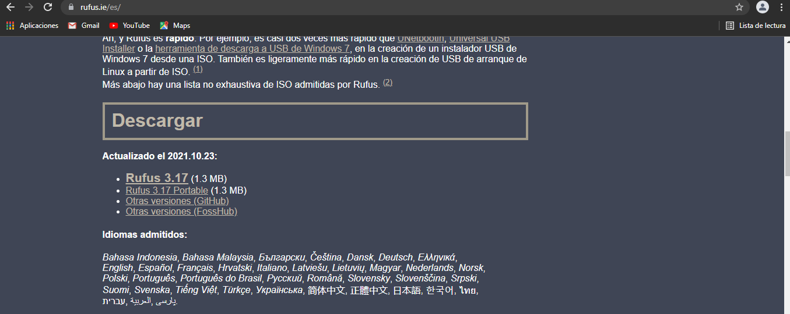
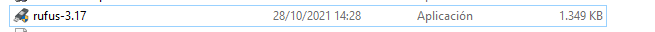

¿Que es el software portable?
Los programas portables son aquellos que no necesitamos instalar a la hora de utilizarlos. Son aplicaciones informáticas ejecutables, iguales a las versiones que se instalan en el sistema operativo, sin diferencia alguna de apariencia o funcionamiento.
Existen software portables de todo tipo. Estos se pueden encontrar en juegos descargables, aplicaciones de uso rapido, instalaciones etc
En nuestro caso hemos elegido la instalacion de rufus.
Para ello iremos a la pagina oficial de rufus y seleccionaremos la opcion de descargar
Al ser un software portable tras esto se nos descargara un ejecutable listo para su uso
La mayor diferencia que se presenta es la de las actualizaciones. Al estar instalado se podra descargar las actualizaciones de una manera mas comoda ya que la verion portable la instalaccion de la actualización en la mayoria de los casos depende de la necesidad de otra descarga de este contenido